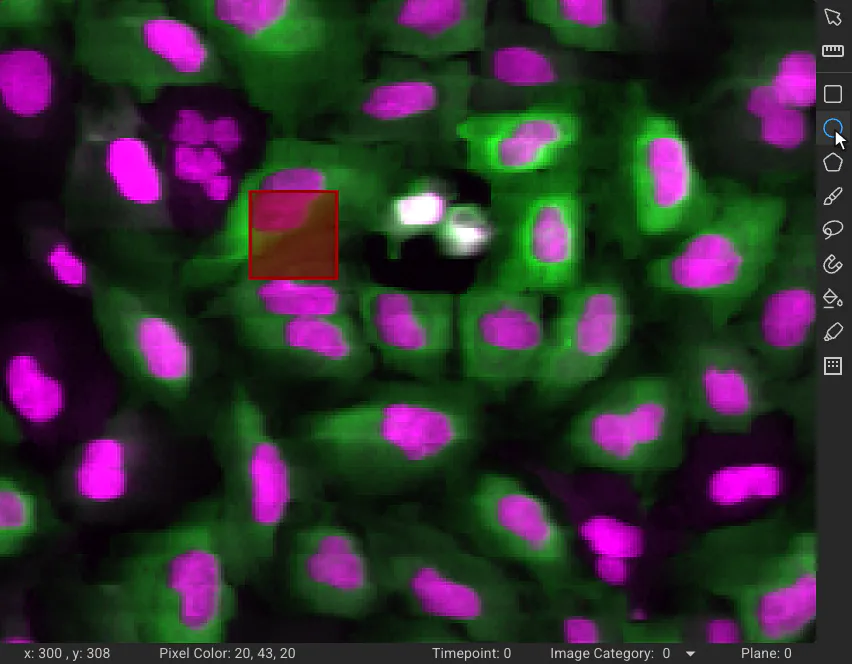
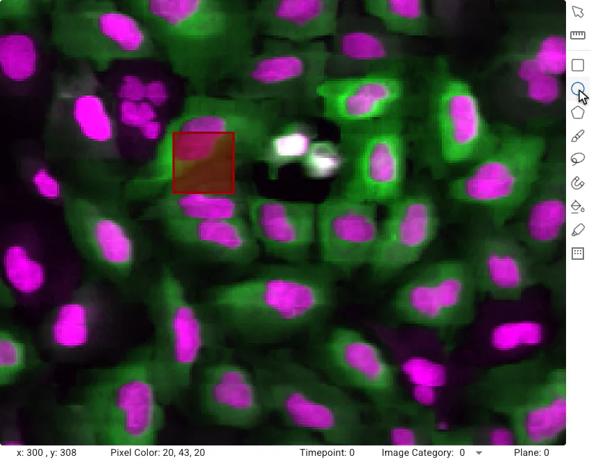
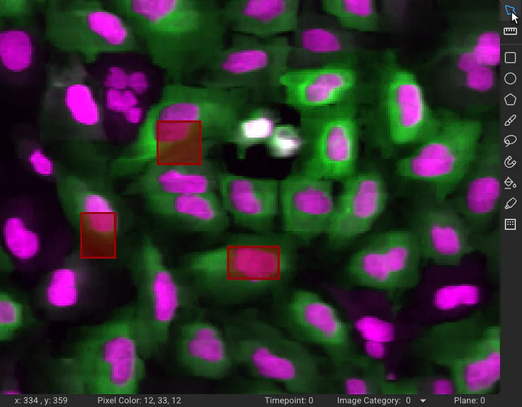
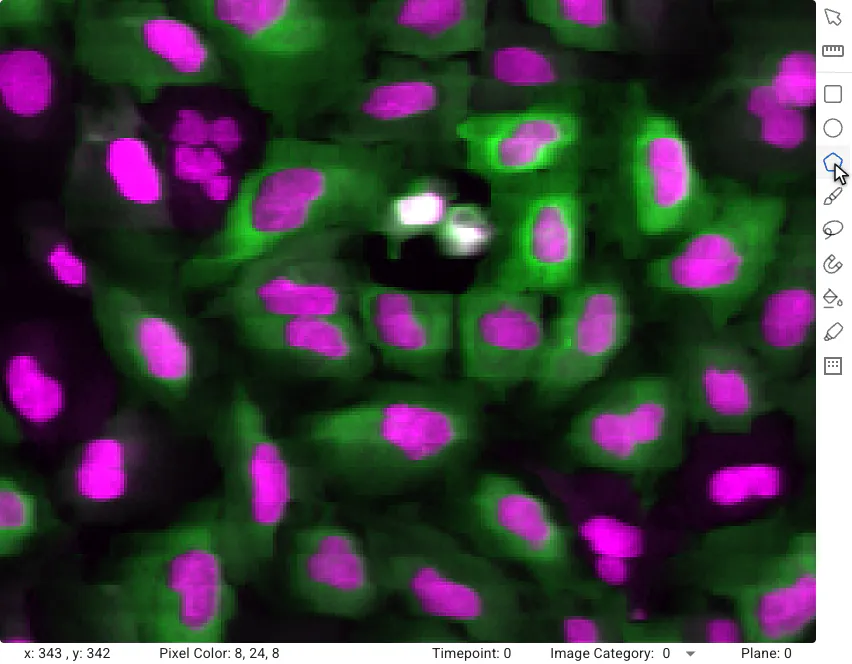
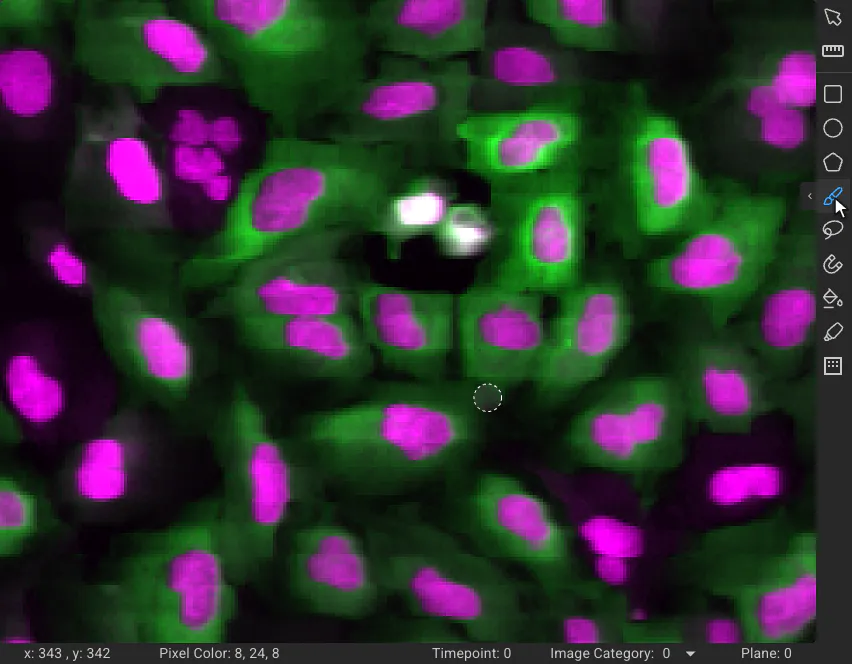
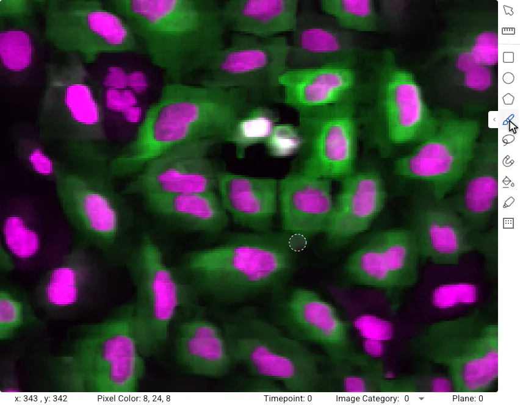
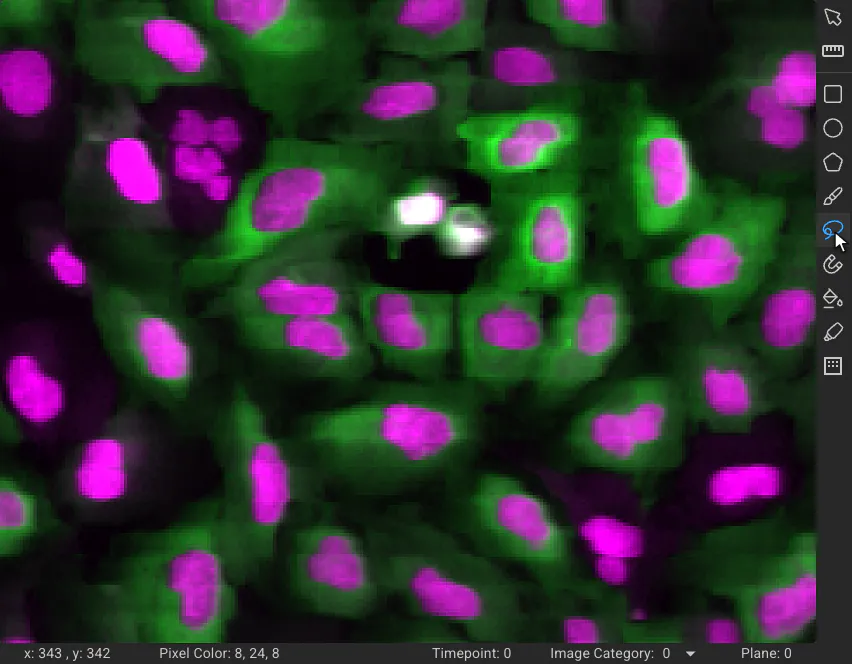
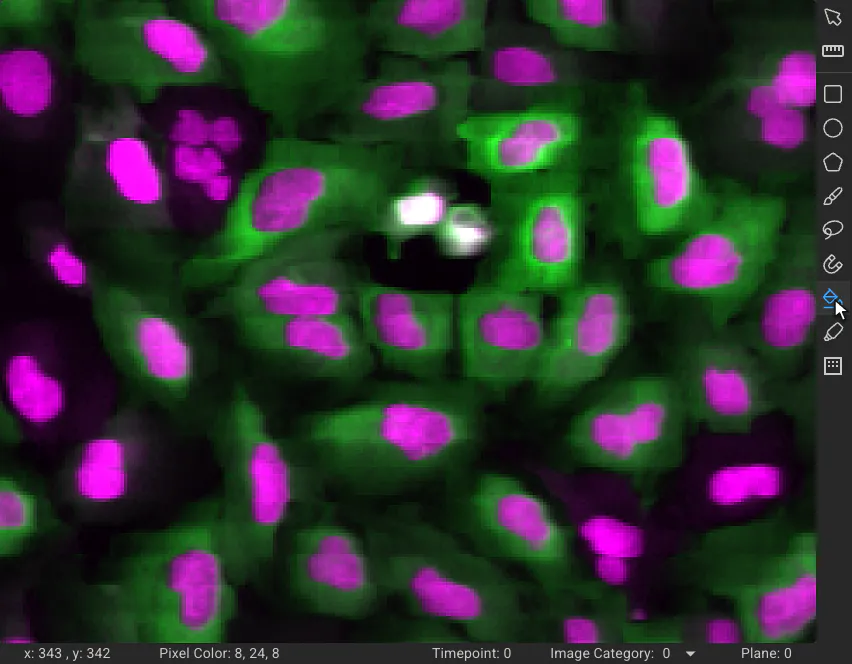
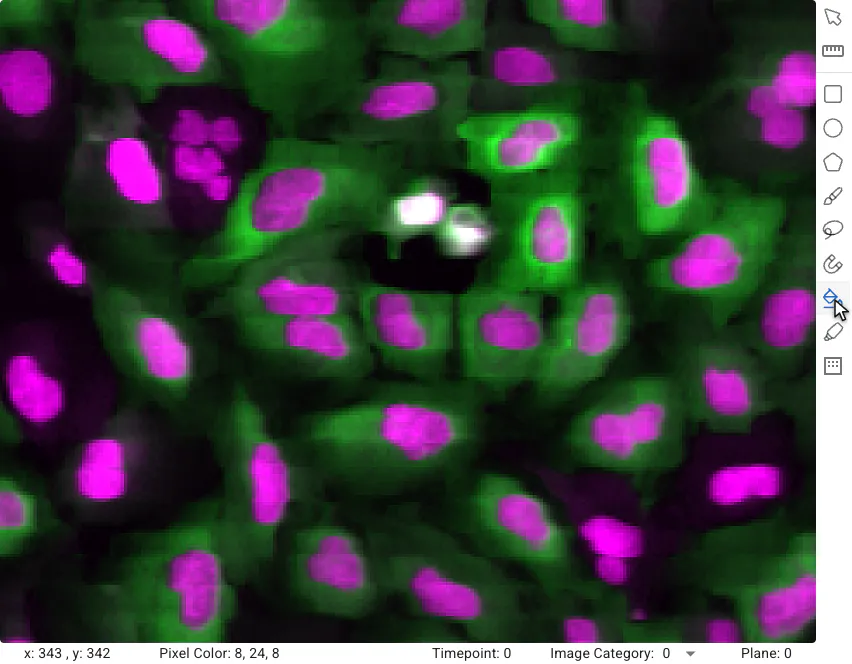
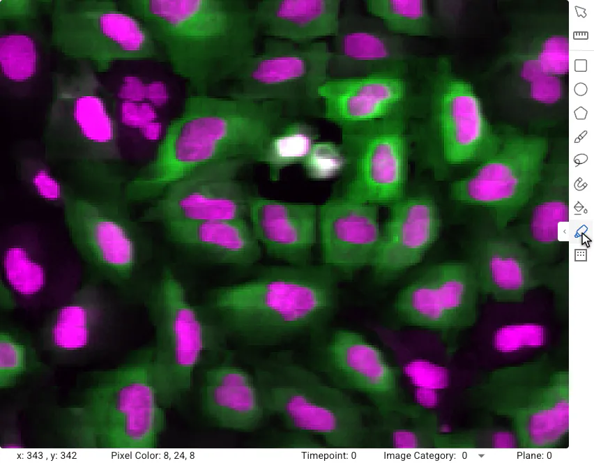

Annotation Tools#
The Image Viewer’s annotator has nine tools for creating annotations, a selection tool for picking them out again, and three ways of combining a new shape with an annotation that is already there. Each is shown below on a nucleus of the Translocation Tutorial example project.
Whichever tool you use, a finished shape is not saved right away: the confirm bar appears at the bottom of the canvas (see Confirming and Editing Annotations) and the shape is saved when you click Confirm or press enter. New annotations go into the kind and category selected in the Annotations drawer, so create a kind first if the project has none.
Combining annotations#
Draw a shape that overlaps an existing annotation, then choose what to do with the two on the confirm bar. The result is previewed on the canvas, and nothing changes until you confirm.
If the new shape overlaps more than one annotation, the bar says so and you click the annotations you want to act on.
Combine#


Combine merges the new shape and the annotation it overlaps into a single annotation.
Subtract#
Subtract removes the area of the new shape from the annotation it overlaps. No new annotation is created.
Intersect#
Intersection keeps only the region where the new shape and the annotation overlap.
Selection tool#

 Selection Tool (
Selection Tool (shift + S): click an annotation to select it, and click it again to deselect it. Click and drag a box to select every annotation inside it. Selected annotations are highlighted, and are the ones the Delete, Categorize and Export actions of the Annotations drawer apply to.

Click annotations to select them one at a time, or drag a box around several.
Rectangular annotation#

 Rectangle (
Rectangle (shift + R): Click and drag from one corner to the opposite corner, or click the two corners.
The rectangle tool.
Elliptical annotation#

 Ellipse (
Ellipse (shift + E): Click and drag across the bounding box of the ellipse, or click twice.
The ellipse tool.
Polygonal annotation#

 Polygon (
Polygon (shift + P): Click to place each corner of the shape. Click the first corner again to close it.

The polygon tool.
Pen annotation#

 Pen (
Pen (shift + F): Paint the annotation by dragging. Click the tool again to open its slider, which sets the size of the brush.


The pen tool.
Lasso annotation#

 Lasso (
Lasso (shift + L): Drag to draw a freehand outline around the object. When you let go, the outline is closed.

The lasso tool.
Magnetic annotation#

 Magnetic (
Magnetic (shift + M): Click on the edge of an object to start, then move along the edge: the line snaps to it. Click to fix the line where you are, and click the starting point to close the outline.
The magnetic tool.
Color annotation#

 Color (
Color (shift + C): Press in the middle of the object, then drag away from where you pressed: the further you drag, the more of the surrounding area of similar color is filled. Let go when the fill covers the object.


The color tool.
Quick annotation#

 Quick Annotation (
Quick Annotation (shift + Q): Move the pointer over the image and the tool highlights the region it predicts there. Click to accept it, or press and drag to add together the regions you pass over. Click the tool again to open its slider, which sets the size of the prediction.

The quick annotation (aka superpixel) tool.
Threshold annotation#

 Threshold (
Threshold (shift + T): Drag a box around the region to threshold. Click the tool again to open its slider, then move it to change the sensitivity and see what is picked up. The generated mask is saved as a single annotation.
The threshold tool.